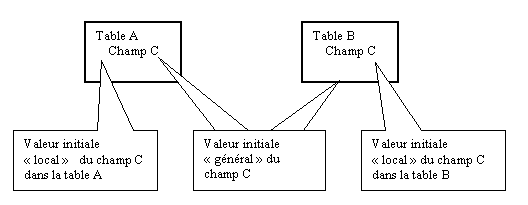

Lorsqu’un nouveau champ est ajouté à une table, la moulinette doit lui affectuer une valeur initiale.Par défaut, tous les champs sont initialisés avec des espaces.
Dans les propriétés d’un champ, le dictionnaire permet de définir la valeur initiale de plusieurs manières :
soit en donnant une valeur constante,
soit en donnant une expression diva qui sera placée à la droite du signe = dans le code diva de la moulinette,
soit en donnant une ou plusieurs instructions Diva qui doivent être exécutées pour calculer le nouveau champ.
Valeur constante
Le paramètre « Valeur initiale » du champ sera mis tel quel après le signe =.
Les constantes de type alpha doivent donc être mises entre quotes.
Exemples :
123,45 : le champ recevra toujours la valeur 123,45.
"abc" : le champ recevra toujours la valeur "abc".
Expression diva
Le paramètre « Valeur initiale » du champ sera mis tel quel après le signe = avec le cas particulier suivant : la chaine $Record est remplacée par le nom de la table traitée.
La moulinette travaille sur deux enregistrements, celui de l’ancienne table et celui de la nouvelle table. L’instance de la nouvelle table a tout simplement le nom de la table et l’instance de l’ancienne table est le même nom préfixé par « old ». Par exemple, si la moulinette traite la table C3, vous aurez donc une instance C3 qui représente le nouvel enregistrement, et une instance OldC3 qui représente l’ancien enregistrement.
Dans le paramètre « Valeur initiale », pour accéder à l’ancien enregistrement, il faut donc écrire old$Record.
Exemples :
- Old$Record.Nom : le champ Nom de l’ancien enregistrement est copié dans le champ en cours.
- Old$Valeur + 10 : le champ Valeur de l’ancien enregistrement auquel on ajoute 10.
Instructions Diva
Le paramètre « Valeur initiale » du champ contient $$ suivi des instructions Diva et sera recopié tel que dans le source Diva de la moulinette.
Attention, ces instructions doivent positionner la nouvelle valeur dans le champ par une affectation.
Comme pour le cas précédent, la chaîne $Record est remplacée par le nom de la table traitée.
Exemple : Traitement de Usercr de la table C3.
Contenu du paramètre « Valeur initiale » :
$$if old$record.modt<>' ' | $record.usermo=old$record.util | $record.usermoori = 20 | else | $record.usercr = old$record.util | endif
Le code de la moulinette contiendra les instructions suivantes :
if OLDC3.MODT <> ' '
C3.USERMO = OLDC3.UTIL
C3.USERMOORI = 20
else
C3.USERCR = OLDC3.UTIL
endif
Valeur Initiale général / local
La valeur initiale « Général » est associé à l’objet indépendamment de son emplacement dans le dictionnaire. En effet, un champ peut se trouver dans plusieurs tables. Quelque soit la table où ce champ est placé, cette valeur initiale l’accompagne.
La valeur initiale « Local » est associé à l’objet et à sa position dans le dictionnaire. La valeur initiale d’un champ peut donc être différente suivant que ce champ est placé dans une table ou dans une autre. Si la valeur « Local » est précisée, elle masque la valeur « Général ».
Exemple :
